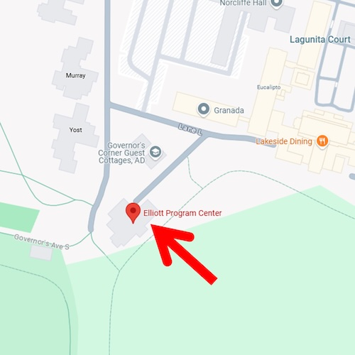
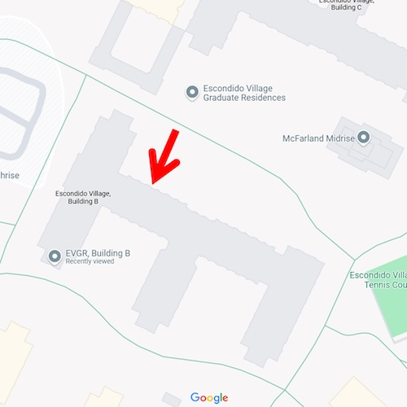
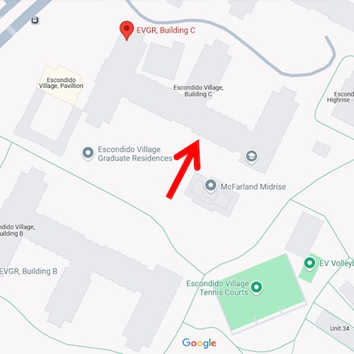
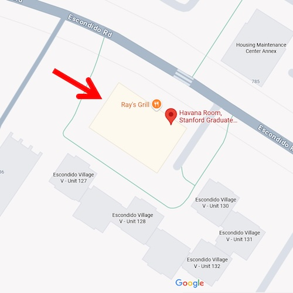
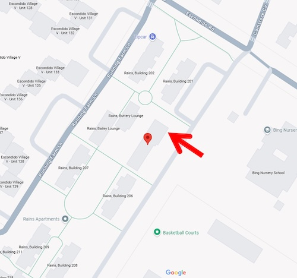
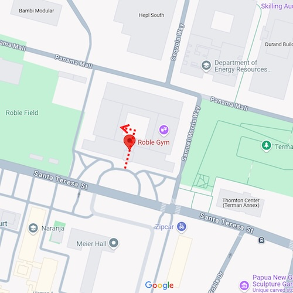

Austria Fortnight Classes
What is the Austria Fortnight?
To help everyone get into the spirit of social dance, our Austria Fortnight classes are 14 informal dance lessons at Stanford’s campus in the two weeks before the Viennese Ball. These classes are free and open to the public, and you can attend as many as you’d like. The Austria Fortnight is kicked off by the Bon Bon Ball.
Please bring water and wear comfortable clothing (most people wear athletic wear) and socks or dance shoes that you can move easily in. Classes will begin promptly at the indicated time and progress quickly, so be sure to arrive a few minutes early to get the most out of them. No partner necessary, we will rotate partners often.
Classes are 2 hours long with open social dancing to practice for the rest of the time. Feel free to show up to the social dancing portion of any of the classes as well.
Recap videos of last year’s lessons can be found here.
Austria Fortnight Schedule
Check back later for this year's Austria Fortnight schedule!
Locations
| Elliott Program Center | Google Maps |  |
| EVGR B Yoga Room (Room 140) |
Google Maps |  |
| EVGR C Dance Studio (Room 153) |
Google Maps |  |
| GCC Havana | Google Maps |  |
| Rains Hacienda | Google Maps |  |
| Roble Gym R113 R114 R115 |
Google Maps |  |
What does beginner or intermediate mean?
Beginner classes will take you from the basic steps of the dance style through some basic moves and allow you to get in lots of practice. Intermediate classes will go more quickly through the basics and move on to teaching different variations of the style to add to your repertoire. All classes are open to everyone regardless of experience. Excited to see you there!
Resources
Here are some useful links to recap and learn more!
Library of Dance Demo Videos:
Recap Videos: